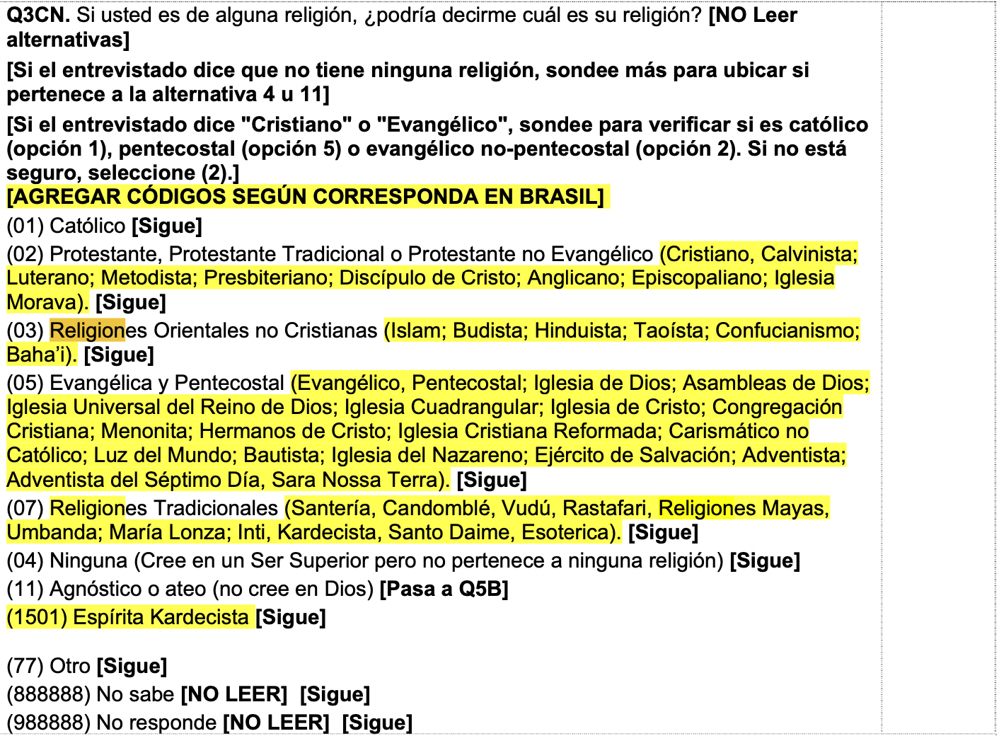
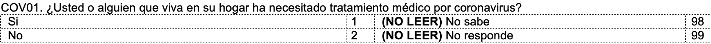
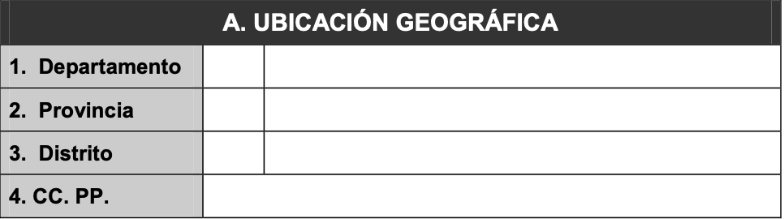
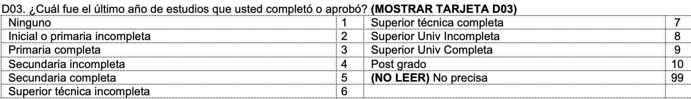
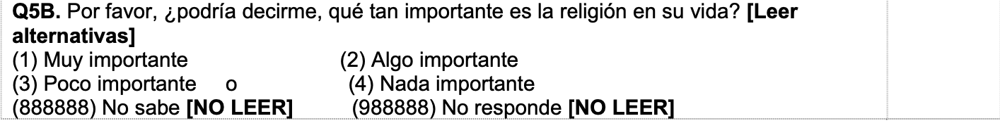
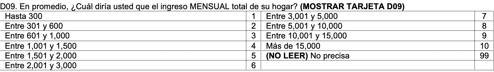

Niveles de medición
Variables categóricas
Variables nominales
Individuos:


- Algún miembro de su familia se ha contagiado de COVID: Sí=1,
No=0.

Distritos:
Departamento: Arequipa=1, Ayacucho=2,…, Ucayali = 24
Región: Costa=1, Sierra=2, Selva=3.

Partido del alcalde: AP=1, APP=2,…., Otro=XX.
Alcalde reelegido: Si=1, No=0.
Variables ordinales
Individuos:
- Educación: Analf=0, Prim=1, Sec=2, Tec=3, Univ=4, Post=5.

- Importancia de religión en su vida: Nada importante=1, Poco
importante=2, Algo importante=3, Muy importante=4.

- Gravedad de contagio de COVID: Nada grave=1, Poco grave=2, Algo
grave=3, Muy grave=4 (PERO, quién evalúa? percepción?)
Distritos:
- Calidad del servicio de agua: Muy mala=1, Mala=2, Regular=3,
Buena=4, Muy buena=5. (PERO, si es percepción, percepción de
quién?)
Ambas son llamadas “factor” en R.
Variables numéricas
Continua
Individuos:
Estatura: en cm o en mt, pero estandarizado.
Peso: en kg o en gm, pero estandarizado.
Ingreso mensual: en soles. Definir si del individuo o de la
familia, si es ingreso mensual o quincenal o anual.

Distritos:
Discreta
Ambas son llamadas “num” en R.
Bases de datos
De manera convencional (y así es en R), las bases de datos (o
“dataframes” en R) son rectangulares y se organizan en filas y columnas.
Cada una de las filas corresponde a una observación (ya sea un
individuo, un distrito o la unidad de análisis que se use). Cada columna
corresponde a una variable (una característica de la unidad de
análisis).
Ejemplo 1
En formato de base de datos o de “dataframe”:
| 1 |
1 |
2 |
25 |
| 2 |
1 |
2 |
54 |
| 3 |
2 |
3 |
37 |
| 4 |
1 |
3 |
65 |
| 5 |
2 |
1 |
NA |
| 6 |
2 |
2 |
73 |
| 7 |
2 |
2 |
48 |
| 8 |
1 |
1 |
32 |
| 9 |
2 |
3 |
51 |
| 10 |
1 |
3 |
37 |
Ejemplo 2
| 1 |
1 |
2 |
2 |
| 2 |
1 |
1 |
1 |
| 3 |
1 |
2 |
0 |
| … |
|
|
|
| 1821 |
3 |
1 |
0 |
LS0tCnRpdGxlOiAiQ2xhc2UgMSIKYXV0aG9yOiAiQXJ0dXJvIE1hbGRvbmFkbyIKZGF0ZTogIjE1LzgvMjAyMyIKb3V0cHV0OiAKICBodG1sX2RvY3VtZW50OgogICAgdG9jOiB0cnVlCiAgICB0b2NfZmxvYXQ6IHRydWUKICAgIGNvbGxhcHNlZDogZmFsc2UKICAgIG51bWJlcl9zZWN0aW9uczogZmFsc2UKICAgIHRvY19kZXB0aDogMQogICAgY29kZV9kb3dubG9hZDogdHJ1ZQogICAgdGhlbWU6IGNvc21vCiAgICBoaWdobGlnaHQ6IHRleHRtYXRlCi0tLQoKLS0tLS0tLS0tLS0tLS0tLS0tLS0tLS0tLS0tLS0tLS0tLS0tLS0tLS0tLS0tLS0tLS0tLS0tLS0tLS0tLS0tLS0tLS0tLS0tCgojIE5pdmVsZXMgZGUgbWVkaWNpw7NuCgotLS0tLS0tLS0tLS0tLS0tLS0tLS0tLS0tLS0tLS0tLS0tLS0tLS0tLS0tLS0tLS0tLS0tLS0tLS0tLS0tLS0tLS0tLS0tLS0KCiMjIFZhcmlhYmxlcyBjYXRlZ8OzcmljYXMKCi0gICBWYXJpYWJsZXMgbm9taW5hbGVzCgogICAgLSAgIEluZGl2aWR1b3M6CgogICAgICAgIC0gICBTZXhvOiBIb21icmU9MSwgTXVqZXI9Mi4KCiAgICAgICAgICAgICFbXShzZXhvLnBuZykKCiAgICAgICAgLSAgIFJlbGlnacOzbjogQ2F0w7NsaWNvPTEsIEV2YW5nw6lsaWNvPTIsIE90cm89My4KCiAgICAgICAgIVtdKHJlbGlnaW9uLnBuZyl7d2lkdGg9IjUwNCJ9CgogICAgICAgICFbXShyZWxpZ2lvbjIucG5nKXt3aWR0aD0iNDY5In0KCiAgICAgICAgLSAgIEFsZ8O6biBtaWVtYnJvIGRlIHN1IGZhbWlsaWEgc2UgaGEgY29udGFnaWFkbyBkZSBDT1ZJRDogU8OtPTEsIE5vPTAuCgogICAgIVtdKGNvdmlkLnBuZykKCiAgICAtICAgRGlzdHJpdG9zOgoKICAgICAgICAtICAgRGVwYXJ0YW1lbnRvOiBBcmVxdWlwYT0xLCBBeWFjdWNobz0yLC4uLiwgVWNheWFsaSA9IDI0CgogICAgICAgIC0gICBSZWdpw7NuOiBDb3N0YT0xLCBTaWVycmE9MiwgU2VsdmE9My4KCiAgICAgICAgIVtdKHViaS5wbmcpe3dpZHRoPSIzNTkifQoKICAgICAgICAtICAgUGFydGlkbyBkZWwgYWxjYWxkZTogQVA9MSwgQVBQPTIsLi4uLiwgT3Rybz1YWC4KCiAgICAgICAgLSAgIEFsY2FsZGUgcmVlbGVnaWRvOiBTaT0xLCBObz0wLgoKLSAgIFZhcmlhYmxlcyBvcmRpbmFsZXMKCiAgICAtICAgSW5kaXZpZHVvczoKCiAgICAgICAgLSAgIEVkdWNhY2nDs246IEFuYWxmPTAsIFByaW09MSwgU2VjPTIsIFRlYz0zLCBVbml2PTQsIFBvc3Q9NS4KCiAgICAgICAgIVtdKGVkdWMucG5nKXt3aWR0aD0iNjE1In0KCiAgICAgICAgLSAgIEltcG9ydGFuY2lhIGRlIHJlbGlnacOzbiBlbiBzdSB2aWRhOiBOYWRhIGltcG9ydGFudGU9MSwgUG9jbyBpbXBvcnRhbnRlPTIsIEFsZ28gaW1wb3J0YW50ZT0zLCBNdXkgaW1wb3J0YW50ZT00LgoKICAgICAgICAhW10oaW1wb3J0YW5jaWEucG5nKXt3aWR0aD0iNjI0In0KCiAgICAgICAgLSAgIEdyYXZlZGFkIGRlIGNvbnRhZ2lvIGRlIENPVklEOiBOYWRhIGdyYXZlPTEsIFBvY28gZ3JhdmU9MiwgQWxnbyBncmF2ZT0zLCBNdXkgZ3JhdmU9NCAoUEVSTywgcXVpw6luIGV2YWzDumE/IHBlcmNlcGNpw7NuPykKCiAgICAtICAgRGlzdHJpdG9zOgoKICAgICAgICAtICAgQ2FsaWRhZCBkZWwgc2VydmljaW8gZGUgYWd1YTogTXV5IG1hbGE9MSwgTWFsYT0yLCBSZWd1bGFyPTMsIEJ1ZW5hPTQsIE11eSBidWVuYT01LiAoUEVSTywgc2kgZXMgcGVyY2VwY2nDs24sIHBlcmNlcGNpw7NuIGRlIHF1acOpbj8pCgpBbWJhcyBzb24gbGxhbWFkYXMgImZhY3RvciIgZW4gUi4KCi0tLS0tLS0tLS0tLS0tLS0tLS0tLS0tLS0tLS0tLS0tLS0tLS0tLS0tLS0tLS0tLS0tLS0tLS0tLS0tLS0tLS0tLS0tLS0tLQoKIyMgVmFyaWFibGVzIG51bcOpcmljYXMKCi0gICBDb250aW51YQoKICAgIC0gICBJbmRpdmlkdW9zOgoKICAgICAgICAtICAgRXN0YXR1cmE6IGVuIGNtIG8gZW4gbXQsIHBlcm8gZXN0YW5kYXJpemFkby4KCiAgICAgICAgLSAgIFBlc286IGVuIGtnIG8gZW4gZ20sIHBlcm8gZXN0YW5kYXJpemFkby4KCiAgICAgICAgLSAgIEluZ3Jlc28gbWVuc3VhbDogZW4gc29sZXMuIERlZmluaXIgc2kgZGVsIGluZGl2aWR1byBvIGRlIGxhIGZhbWlsaWEsIHNpIGVzIGluZ3Jlc28gbWVuc3VhbCBvIHF1aW5jZW5hbCBvIGFudWFsLgoKICAgICAgICAhW10oaW5ncmVzb3MucG5nKXt3aWR0aD0iNTM1In0KCiAgICAtICAgRGlzdHJpdG9zOgoKICAgICAgICAtICAgRXh0ZW5zacOzbjogZW4ga20yCgogICAgICAgIC0gICBQQkkgcGVyIGPDoXBpdGE6IGVuIHNvbGVzLgoKICAgICAgICAtICAgSW5ncmVzbyBtZW5zdWFsIHByb21lZGlvOiBlbiBzb2xlcy4KCi0gICBEaXNjcmV0YQoKICAgIC0gICBJbmRpdmlkdW9zOgoKICAgICAgICAtICAgTsO6bWVybyBkZSBoaWpvczogZGVmaW5pciBzaSBlbiB0b3RhbCBvIHF1ZSB2aXZlbiBlbiBlbCBob2dhci4KCiAgICAgICAgLSAgIEVkYWQ6IGVuIGHDsW9zIGN1bXBsaWRvcy4gUGFyYSBtw6FzIHByZWNpc2nDs24gc2UgcGlkZSBsYSBmZWNoYSBkZSBuYWNpbWllbnRvLgoKICAgIC0gICBEaXN0cml0b3M6CgogICAgICAgIC0gICBOw7ptZXJvIGRlIHJldm9jYXRvcmlhcy4KCiAgICAgICAgLSAgIE7Dum1lcm8gZGUgcG9zdGFzIG3DqWRpY2FzLgoKICAgICAgICAtICAgUG9ibGFjacOzbi4KCkFtYmFzIHNvbiBsbGFtYWRhcyAibnVtIiBlbiBSLgoKLS0tLS0tLS0tLS0tLS0tLS0tLS0tLS0tLS0tLS0tLS0tLS0tLS0tLS0tLS0tLS0tLS0tLS0tLS0tLS0tLS0tLS0tLS0tLS0tCgojIEJhc2VzIGRlIGRhdG9zCgpEZSBtYW5lcmEgY29udmVuY2lvbmFsICh5IGFzw60gZXMgZW4gUiksIGxhcyBiYXNlcyBkZSBkYXRvcyAobyAiZGF0YWZyYW1lcyIgZW4gUikgc29uIHJlY3Rhbmd1bGFyZXMgeSBzZSBvcmdhbml6YW4gZW4gZmlsYXMgeSBjb2x1bW5hcy4gQ2FkYSB1bmEgZGUgbGFzIGZpbGFzIGNvcnJlc3BvbmRlIGEgdW5hIG9ic2VydmFjacOzbiAoeWEgc2VhIHVuIGluZGl2aWR1bywgdW4gZGlzdHJpdG8gbyBsYSB1bmlkYWQgZGUgYW7DoWxpc2lzIHF1ZSBzZSB1c2UpLiBDYWRhIGNvbHVtbmEgY29ycmVzcG9uZGUgYSB1bmEgdmFyaWFibGUgKHVuYSBjYXJhY3RlcsOtc3RpY2EgZGUgbGEgdW5pZGFkIGRlIGFuw6FsaXNpcykuCgotLS0tLS0tLS0tLS0tLS0tLS0tLS0tLS0tLS0tLS0tLS0tLS0tLS0tLS0tLS0tLS0tLS0tLS0tLS0tLS0tLS0tLS0tLS0tLS0KCiMjIEVqZW1wbG8gMQoKLSAgIFVuaWRhZCBkZSBhbsOhbGlzaXM6IGluZGl2aWR1b3MKCi0gICBNdWVzdHJhOiAxMCBpbmRpdmlkdW9zCgotICAgVmFyaWFibGVzCgogICAgLSAgIFNleG8uIDEwIG9ic2VydmFjaW9uZXM6IEgsIEgsIE0sIEgsIE0sIE0sIE0sIEgsIE0sIEgKCiAgICAtICAgTml2ZWwgZWR1Y2F0aXZvLiAxMCBvYnNlcnZhY2lvbmVzOiBTLCBTLCBVLCBVLCBQLCBTLCBTLCBQLCBVLCBVCgogICAgLSAgIEVkYWQuIDkgb2JzZXJ2YWNpb25lcyArIDEgdmFsb3IgcGVyZGlkbzogMjUsIDU0LCAzNywgNjUsIE5BLCA3MywgNDgsIDMyLCA1MSwgMzcKCkVuIGZvcm1hdG8gZGUgYmFzZSBkZSBkYXRvcyBvIGRlICJkYXRhZnJhbWUiOgoKfCBpZCAgfCBzZXhvIHwgZWR1YyB8IGVkYWQgfAp8Oi0tLTp8Oi0tLS06fDotLS0tOnw6LS0tLTp8CnwgIDEgIHwgIDEgICB8ICAyICAgfCAgMjUgIHwKfCAgMiAgfCAgMSAgIHwgIDIgICB8ICA1NCAgfAp8ICAzICB8ICAyICAgfCAgMyAgIHwgIDM3ICB8CnwgIDQgIHwgIDEgICB8ICAzICAgfCAgNjUgIHwKfCAgNSAgfCAgMiAgIHwgIDEgICB8ICBOQSAgfAp8ICA2ICB8ICAyICAgfCAgMiAgIHwgIDczICB8CnwgIDcgIHwgIDIgICB8ICAyICAgfCAgNDggIHwKfCAgOCAgfCAgMSAgIHwgIDEgICB8ICAzMiAgfAp8ICA5ICB8ICAyICAgfCAgMyAgIHwgIDUxICB8CnwgMTAgIHwgIDEgICB8ICAzICAgfCAgMzcgIHwKCi0tLS0tLS0tLS0tLS0tLS0tLS0tLS0tLS0tLS0tLS0tLS0tLS0tLS0tLS0tLS0tLS0tLS0tLS0tLS0tLS0tLS0tLS0tLS0tLQoKIyMgRWplbXBsbyAyCgotICAgVW5pZGFkIGRlIGFuw6FsaXNpczogZGlzdHJpdG9zIGRlbCBQZXLDugoKLSAgIE11ZXN0cmE6IDE4MjEgZGlzdHJpdG9zCgotICAgVmFyaWFibGVzCgogICAgLSAgIFJlZ2nDs24uIDE4MjEgb2JzZXJ2YWNpb25lczogQywgQywgQywgUywgUywgU2UsIEMsIEMsIFMuLi4uLi4uU2UKCiAgICAtICAgQ2FsaWRhZCBkZSBhZ3VhLiAxODIxIG9ic2VydmFjaW9uZXM6IE0sIE1NLCBNLCBNTSwgUiwgQi4uLi4uLk0KCiAgICAtICAgTsO6bWVybyBkZSBwb3N0YXMuIDE4MjEgb2JzZXJ2YWNpb25lczogMiwgMSwgMCwgMCwgMiwgMywgMSwgMC4uLi4uMAoKfCAgaWQgIHwgcmVnaW9uIHwgYWd1YSB8IHBvc3RhIHwKfDotLS0tOnw6LS0tLS0tOnw6LS0tLTp8Oi0tLS0tOnwKfCAgMSAgIHwgICAxICAgIHwgIDIgICB8ICAgMiAgIHwKfCAgMiAgIHwgICAxICAgIHwgIDEgICB8ICAgMSAgIHwKfCAgMyAgIHwgICAxICAgIHwgIDIgICB8ICAgMCAgIHwKfCAuLi4gIHwgICAgICAgIHwgICAgICB8ICAgICAgIHwKfCAxODIxIHwgICAzICAgIHwgIDEgICB8ICAgMCAgIHwKCiMjIEVqZW1wbG8gMwoKIVtdKGRwdG9zLnBuZykKCiMjIEVqZW1wbG8gNAoKIVtdKGNvbWlzLnBuZyl7d2lkdGg9IjcxNSJ9Cg==